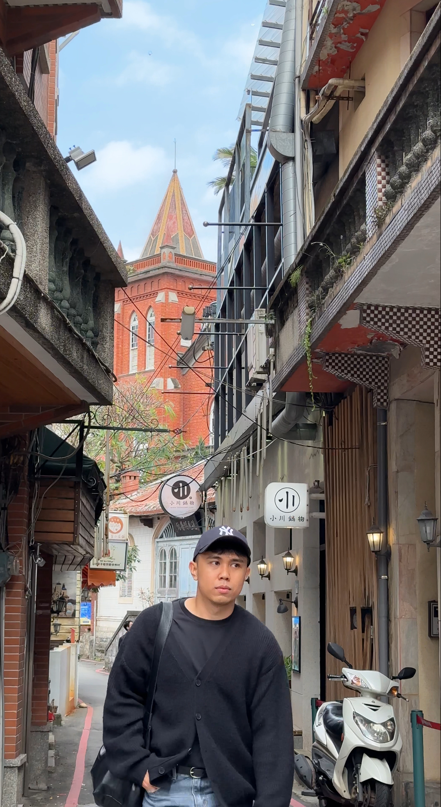

01 / WHO I AM
More than just the numbers.
Data helps me understand the world. Curiosity makes me explore it.

Hi, I'm Roel Valenzuela — a Data Analytics Professional and WFM Senior Team Leader with over a decade of experience across operations, workforce management, analytics, and process improvement.
I've always been curious about how things work and why they work the way they do. That curiosity naturally led me toward data, problem-solving, and finding the stories hidden behind numbers.
Working at the intersection of people, operations, data, and technology has taught me that the best solutions don't always come from simply looking at a spreadsheet.
They come from understanding the bigger picture, asking better questions, connecting different perspectives, and sometimes approaching a problem from an unexpected angle.
I don't just look for what the numbers are saying. I look for why they're saying it—and what we can do next.
But curiosity doesn't clock out.
Outside of work, my curiosity takes me in completely different directions. Music, movement, fashion, languages, technology — I genuinely enjoy starting with something unfamiliar, being a beginner, and slowly figuring it out.
Guitar & Drums
During my years living in Malaysia, I learned how to play guitar and drums. Both taught me something I genuinely enjoy: being a beginner, practicing, making mistakes, and gradually seeing progress.
Pilates
Pilates became another kind of learning experience — understanding movement, control, balance, and how small adjustments can completely change an outcome.
Fashion & Design
From sketching ideas and understanding dress forms to patterns and sewing, I learned how creativity needs both imagination and structure to bring an idea to life.
Learning what's next
From Machine Learning and Generative AI to completely unrelated interests, I enjoy putting myself in situations where I don't know everything yet—and learning my way through them.
Et oui... j'ai même pris quelques cours de français.
Because apparently learning one thing at a time isn't really my thing.
More than you might think.
Learning music taught me patience and practice. Pilates taught me awareness and control. Fashion taught me creativity and structure. Learning languages taught me how to see things from a different perspective.
These experiences may seem completely unrelated to data analytics—but together, they've shaped how I learn, how I think, and how I approach unfamiliar problems.
Whether I'm exploring a dataset, learning a new technology, picking up an instrument, or trying something I've never done before, the process is surprisingly similar: Ask questions. Stay curious. Experiment. Learn. Try again.
Curiosity is probably my most transferable skill. It helps me bring different perspectives together, think creatively, and approach every problem I try to solve with an open mind.